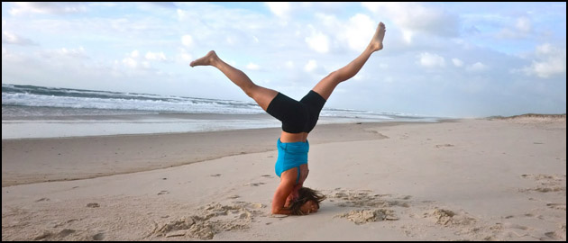
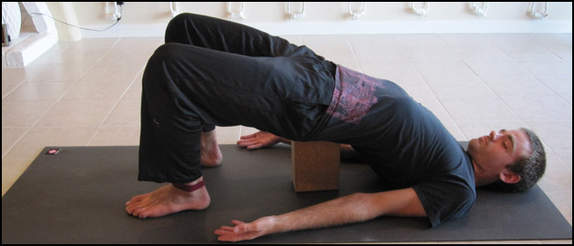

Here are plenty of answers to frequently asked questions about yoga. Feel free to link to this page, or to share it on a social network. Namaste!
A: Most people who practice yoga are seeking or keeping a fit body. They know that regular practice develops strong, lean and limber muscles that are capable of almost anything. Yoga also raises one's energy level, increases co-ordination, prevents injury, deepens breathing and dissolves muscular tension.
Unlike other exercise systems, yoga also leads to complete physical health. It helps all the internal organs detoxify, relax and function at their peak. It acts as a tonic for every system in the body, including the central nervous system. The therapeutic value of yoga, and its ability to prevent and cure disease, has been known for centuries in the East and is now being recognized by Western doctors as well.
Yoga has major mental benefits as well. It boosts concentration and focus, leading to more effectiveness in work and in leisure. It relaxes stress and tension and promotes peace of mind. It also grows awareness of one’s own thought patterns, enabling greater clarity and choice. When the mind is focused and calm and clear, one is prepared to handle all challenges with grace and with skill.
In its most holistic sense, yoga is a complete spiritual path with its roots in the culture (not the religion!) of India. By maintaining a sharp mind and a healthy body through yoga, ancient sages were able to devote all their resources to meditation and other spiritual pursuits. If you're interested in exploring the spiritual potential of yoga, talk to Eric at Full Lotus Yoga or another interested teacher.
Of course, yoga does not have to be a spiritual practice, and it has never really been a religious one. Most students are content to feel healthier, more energized, and more relaxed because of yoga. They are happy to look better and to discover new capabilities in their bodies. Most importantly, they have fun doing yoga, appreciate its benefits and look forward to every session.
A: We begin each class by setting aside all mental distractions and reconnecting with our bodies and breath. This may involve breathing exercises, chanting or meditation, but its key element is focusing and connecting the mind to body via the breath.
Next we begin to gather momentum by warming up and moving into a more vigorous, workout-based portion of the class. Once we’re warmed up we continue through a wide variety of strengthening, stretching and balancing poses for close to an hour, and finish by winding down to about ten minutes of deep relaxation at the end.
A typical class is 75 to 90 minutes long. Vinyasa classes are faster-paced with more strength-based and energetic poses, and Yin Yoga classes slow things down to focus on relaxation and flexibility. Hatha and Sivananda style classes choose a healthy balance. Class sizes are small and students are given personal attention and care. Verbal instruction is the primary method of teaching, and it’s supplemented by pose demonstrations and hands-on adjustments. If you’re not comfortable being touched in order to correct or to deepen a pose, please let your teacher know.
A selection of carefully crafted music playlists – from trip-hop and ambient to classical and indie folk - are used to support rather than distract from the yogic flow. The space is beautifully decorated to add to the relaxed and contented feeling. Along with an energizing and relaxing workout, you can expect to meet some wonderful people and have a chance to chat before and after class.
As an independent organization, FLY offers personal attention and genuine care that can be hard to find. If you have any further questions before your first class, please feel free to contact us. We’re more than happy to share our knowledge, and all the other joys and benefits of yoga, with anyone who's interested.
A: There is some. Please arrive on time for class, and if you must be late, please move quietly and smoothly into place and be still during OM. Also, due to limited space you should reserve your space in class ahead of time, using a phone call or text message if it’s on short notice.
Some students may be sensitive to strong scents, so please don't wear perfume or cologne, and try to avoid any more natural bodily odors. Passing gas is not unusual and is understood as part of the improved digestion that yoga brings. Please turn your mobile phone off or set it on silent mode during class.
Questions about the practice are welcome – if they’re brief or urgent, feel free to ask during class. We also welcome more in-depth questions that are of general interest at the end of each class. For more specific questions about your personal practice, your yoga teacher will be happy to answer once the class has dispersed, or outside of class times via phone or email.
Finally, always treat your body with respect: do not force yourself into a pose or overstretch. Gradually grow to reach new limits, and listen to your body as it is in this moment, keeping in mind that your abilities may vary from class to class. Try not to compete with others, as yoga is highly individual and the only person worth exceeding is your past self. Some bodies are naturally more suited to yoga, but the people who gain the most are the ones who practice consistently and sincerely.
A: If you’ve got a decent budget, Heartyoga in Taiwan makes some very nice mats. Otherwise, find a mat with enough cushioning to be comfortable, but not so much that it compromises balancing poses. 5mm is a good thickness. Its surface should prevent slipping, ideally while dry or wet. Its length should match your height or be longer, and it should fairly light if you plan to travel with it. You can also consider the environmental impact of the material used, and of the manufacturing process. Once you start using natural rubber or another high quality mat, you won’t want to go back to PVC. The price difference is often made up when a proper mat lasts a lot longer than a cheap one.
A: Nothing! If you’re tough enough, you don’t even need a mat. People have been doing yoga wearing loincloths, on dirt floors, for thousands of years. Plenty of advertisers will be thrilled if you buy their products, but that doesn’t mean you need them.
That being said, you may appreciate what a block, strap and bolster can do for you in various poses. You can order any of these from Full Lotus if you like.
A: Not particularly. Any physical activity carries a risk of injury, but it can be avoided with the proper precautions. When we bring awareness to our bodies, as yoga encourages, we bring safety along with it. We can also avoid practices that are a lot more physically demanding than what we’re used to. This means being patient as our bodies develop, avoiding unskilled & overzealous teachers, and not competing with other students or with images we’ve seen in the media. If we practice yoga mindfully and respect our bodies for what they are – not what our egos might want them to be - we can stay injury-free and enjoy the profound physical benefits of yoga practice.
A: These days everyone and anyone has a style of yoga named after them, and it can be hard to know where to start. One solution is to trace yoga's roots back to ancient India. Alongside the spiritual paths of selfless work (karma yoga), divine devotion (bhakti yoga), and scriptural study (jnana yoga), a fourth path known as Raja Yoga was developed. Raja Yoga includes two sets of ethical guidelines, physical exercises, breath work, sense withdrawl, concentration, meditation and eventually enlightenment.
For those who have a separate spiritual path or a more secular life, the physical exercises and breath work of Raja Yoga can be practiced as Hatha Yoga. Many other styles have been derived from this starting point, some in the spirit of innovation and others more driven by novelty and commerce. The proven effectiveness of the classical Hatha style has kept it thriving in today's world.
In the 1900s Pattabhi Jois re-used the term "Ashtanga", which is another word for Raja Yoga, to name his style of Ashtanga Vinyasa Yoga. This style choreographs the transitions between poses and syncs them up with the breath. The emphasis on breathing, which is also part of proper hatha yoga, helps increase one's meditative focus. Ashtanga vinyasa is more vigorous than hatha yoga because it has far fewer relaxation points; this is a tradeoff that allows lactic acid to build up in one's muscles and create stiffness and soreness. Nonetheless, it's a popular and enjoyable style of yoga.
There are, of course, many more styles of yoga available today. Iyengar Yoga uses props to make hatha yoga accessible to everyone, regardless of their beginning level of fitness. Bikram Yoga uses heat to overstretch muscles and promotes rather unhealthy weight loss through water loss. Finally, Sivananda Yoga uses a sequence set by a modern guru, Swami Sivananda Saraswati, to share a diverse set of benefits drawn from the ancient style of hatha yoga.
At Full Lotus Yoga, the classes are founded on the classical yoga tradition. Each class includes several warm-ups, breathing exercises, inversions, forward bends, backward bends, twists, balances, standing poses and relaxations. Modifications are given to suit each student's level, and alignments are corrected with knowledge and care. The focus is on creating a safe, fun and peaceful environment where everyone can experience the joy of a great yoga session, and carry its benefits off the mat and into the world.

A: Contact the venue. For private classes at karam's house, you can borrow one of his.
A: Please do; our head teacher is from a working-class family and understands tight budgets. We are open to barter, including skills exchanges and computer-based work. We also offer discounts through our mailing list and facebook page. If all else fails, contact us and explain your situation; chances are we'll be happy to help.
A: Wear something comfortable that will let you move freely, and allow air flow to keep you cool. Baggy clothes are fine if they're not too distracting when they need adjustment. Form-fitting clothes made of stretchable, breathable fabric are another solution. Make-up doesn’t really matter either way, and little to no jewelry is best. Finally, bare feet are best for practice; if that doesn't suit you, you can buy "Yogitoe" socks with rubber padding on the bottom, which keep your socked feet from sliding around on the mat.
A: Yoga is best on an empty stomach. Try to wait 3 or 4 hours after a full meal, or 2 hours after a snack. If you’re really hungry before class, have something easy to digest – like a banana – leaving 30 minutes if you can. If you can’t, a little fruit juice before class will give you an energy boost.
Another more meditative approach is to allow a reasonable amount of hunger, and calmly observe it and your attitude towards it as you practice. If this is too much and you feel dizzy or headachey in class, just take a rest, breathe deeply, and eat or drink a little more next time.
A: Head on over to our contact page and write a message without adding a name or email address. It'll be sent to our head teacher Eric. If you have a complaint, please be specific about what happened and which teacher or class was involved. If you'd like a reply, you'll need to include your name, phone number or email. We always appreciate your feedback.
A: Give your contact info here and you'll receive a newsletter full of studio news, promotional deals, tips for spiritual and physical practice, and maybe a laugh or two. You can also follow us on Facebook or Twitter. The phone number is optional, you can unsubscribe at any time, and we won't send you spam.

A: We understand that cash is tight for many people these days. And if you’re not an absolute beginner, you might be able to establish a decent practice using Youtube and a good book or two. However, if you’re an absolute beginner, learning yoga from a book or video is like doing the same with martial arts. It carries a significant risk of injury, and you may develop bad postural habits that are hard to undo. A good teacher will keep beginners practicing safely and properly, and establish a two-way spontaneous interaction that is essential for learning. Setting aside the obvious bias that we have as yoga teachers, we suggest that you invest in ten classes to provide a solid foundation before you begin practicing on your own.
A: The best and safest way to establish a sturdy foundation – including the physical fitness and mental knowledge of yoga – is with a good teacher. Once you feel comfortable doing a decent number of poses properly, you can use videos or books to practice at home. As you become an intermediate or advanced student, your home practice will become an absolutely wonderful way to spend your time; you can let your awareness and intuition guide you from one pose to the next, giving your body what it needs most and enjoying the flow as it happens.
As with any workout program, you’ll be much more consistent when you enjoy the process and see positive results. So take time to appreciate how good it feels, and pay attention to all the benefits you experience. If you can dedicate a small space in your home to practicing yoga, it’ll be easier to set aside your other responsibilities and concerns when you want to focus on your practice. You should also be wary of teachers who encourage you to depend on them for yoga – by not explaining poses fully, or by adjusting you so quickly and forcefully that they’re really doing the poses for you.
More advanced practitioners will have a solid home practice, but they’ll come to class to be part of the community, to be guided through a practice rather than having to navigate themselves, to do poses they tend to avoid or forget about, and to learn new ideas and techniques from a more experienced teacher.
A: In a sense, Yin Yoga is the opposite of Vinyasa flow. There are few active poses and many passive ones, which are all held for a long duration. Muscles are consciously relaxed so that more stretch can move to the connective tissues. There's more focus on the breath and the mind; it's like using different asanas as meditation poses. It's great for flexibility and relaxation after a long day, and it's wonderful in the morning or in bed before sleep.
A: For beginners, the Sivananda Companion to Yoga is a beautifully illustrated guide to complete yoga practice, with authentic information inside. If you’re more interested, B.K.S. Iyengar’s Light on Yoga is a classic, as is Asana Pranayama Mudra Bandha by Swami Satyananda Saraswati. Stephen Cope’s Yoga and the Quest for the True Self is a personal favorite memoir on yogic lifestyle and spiritual practice. As for videos, Yogatic on Youtube is nice. P90X Yoga is popular and introduces some important poses, but the teacher and style are not really authentic. We’re happy to take suggestions for books and videos if you have them.
A: Hindu hymns aside, here’s a nice list: Ohbijou, Michael Hewitt, General Fuzz, Rhian Sheehan, Iron & Wine, Kings of Convenience, Bonobo, Alexander Turnquist, Four Tet, Sunwrae, Rachel’s, Makyo, Deep Forest and Cinematic Orchestra.
This is OK and it happens to others too. The body and mind are more closely linked than we realize, so old mental or emotional traumas will have physical reflections - areas of chronic tension in the physical and energetic body. Asanas, especially hip or heart openers, tend to soften or unravel those knots. It's a very healthy process and a deep detox, that will feel great afterward. But it can be a bit alarming.
So when it happens, stay with your breath. The full yogic "wave" breath is a great tool here. Let yourself relax and soften, and know that it's a healthy, positive process. The mind can calmly watch, allowing and accepting what's happening until it's done. Now if you're concerned about disturbing others, which is legitimate, you can promise your body to let it out later, you can stay very relaxed so the tears flow out without sobbing, or you can leave to a safer space and let it come on out.
A: Yes. Yoga can go a long way toward relieving discomfort and feeling good in your body during your cycle. Poses and sequences can be customized to help relieve cramps and other symptoms, and they can make you feel much better. Inversions are poses that require some consideration. Some traditions advise against performing them during menstruation, mostly because of old-fashioned cultural taboos. Some modern research also suggests - inconclusively - that reversing your flow with gravity (a.k.a. "retrograde menstruation") may increase the risk of endometriosis. We suggest that you practice anything you like during times of light flow, but be very attentive to your body and do inversions briefly or not at all when your flow is heaviest. Headstands and shoulderstands will still be there for you when you’re done.
A: You can fine-tune the muscles of the hands by shifting your weight onto them, then pressing different parts of the hand into the mat. Do down dog and arm balances like this, or get up on your fists or fingertips.
There are loads of core strength moves in yoga. For a good foundation, lay prone and lift your head and shoulders up into Cobra, or your legs up into Locust. Then lay supine and lift your straight legs with feet together and heels extended.
For leg strength and flexibility, try wide chair or "Sofa" pose: Stand with wide knees, feet pointed NE and NW, then lower your hips down and work toward thighs being flat with shins vertical. Spine aligned as in mountain pose with back straight and pelvis neutral. Work the knees back and groin forward.
Camel pose is a nice shoulder opener and spinal backbend. Paschimotanasa followed by a side bend and a twist will complete some basic spinal mobility.
For mountaineering, pranayama will help. I'd suggest tripartite breath for maximizing O2 absorption and lung awareness, and Bhastrika breath for your respiratory muscles and lung capacity.
A: No. In the words of Swami Vivekananda: "For those who want only a little practice for an everyday business sort of life, let them not each too much; otherwise they may eat whatever they please. For those who want to make rapid progress, and to practice hard, a strict diet is absolutely necessary." - Swami Vivekananda, "Raja Yoga" p.77.
Whatever your diet, it’s best not to eat too much or too quickly at a sitting. It’s said that after a meal, a yogi’s stomach is half full of food, a quarter full of water, and a quarter full of air.
Many yogis will naturally start to eat fresher and healthier food, as they become more aware of how food affects their bodies. Those who choose a vegetarian diet should include foods or supplements that supply calcium, protein, iron (especially for women) and vitamin B12. A healthy diet of any kind will help with weight loss and relieve any health problem you can name.
Nutrition is a complex topic and beyond the scope of this FAQ; for more on the yogic perspective, feel free to ask your yoga teacher.
A: For light cleaning, you can make a solution of 1 part vinegar and 3 parts water in a spray bottle, and use it to spray and wipe down the mat after use. Some people add tea tree oil or another essential oil. If your mat needs more attention, you can wash it in a shallow bathtub; the washing machine is possible for many mats, but it wastes water and energy. Soap can soak into the mat and come out while you’re practicing, so your vinegar spray is a better choice. Dry the mat thoroughly by placing a towel on top of it, rolling it up for a squeeze, and hanging it up to dry for a day or more. Long toenails can damage a mat, and some mats don’t like direct sunlight; check the manufacturer’s recommendations for the mat you’ve got.
A: Yes. A decent teacher will adapt the poses and practices so they won’t do any harm. This requires that they know about your issue, and that you treat yourself safely when their attention is with another student. With a smaller class, a more skilled teacher, and more self-education about your issue, you’ll have more success.
Major injuries or conditions will demand more of the teacher’s attention, and this can make group classes impractical. The solution in this case is private yoga therapy, with one student or a small group that has a similar issue. Yoga is very effective therapy for a wide range of physical ailments, as these journal articles show. If ongoing private classes aren’t affordable, you can ask your teacher to prescribe a therapeutic self-practice for you. You can then use the knowledge they share to relieve your own ailment, now and at any time in the future.
A: First let’s define what "spiritual" means in this answer. It’s not about joining a religion, performing rituals, reading scriptures, or worshipping deities. It’s all about developing spiritual qualities, including awareness, equanimity and compassion. Even without the full spiritual path of Raja Yoga (described below), the exercise and breathing practice of Hatha Yoga can develop these qualities and therefore be a spiritual practice.
How? It begins by calming us down. Slow and deep breathing, combined with the active massage that various poses give your body, has a deeply relaxing effect on the nervous system. Over time, this weakens the fight-or-fight response that causes so much anxiety. This helps us stay calm and confident in stressful situations (and non-stressful ones), so that we can react in intelligent ways and be less controlled by fear.
Yoga also helps us develop an intricate awareness of our selves, beginning with our bodies. First it slows the endless chain of thoughts that run through our minds, allowing space for new perspectives and creativity. Thoughts become less of an automatic response to desire and aversion, and less of an amplifier thereof, and more of a clear birds-eye view of our lives. This allows a clearer understanding that isn’t as distorted by what we want to see, or what we don’t want to look at. Concentration sharpens to allow more depth of understanding as well. This understanding lets us act more confidently, and in ways that are more well-suited to our circumstances.
Finally, compassion; yoga teaches us to love our bodies as they are, and appreciate how wonderfully lucky we are to them in the first place. The same is true for our minds, unique as they are. This compassion begins with ourselves and then extends to others, as we begin to understand how many of our core motivations, needs, sadnesses and joys are shared by our fellow humans. In a nutshell, yoga helps us see ourselves more clearly, to accept and love what we see, and then to recognize how much of the human condition we all share.
A: No; yoga and Hinduism are two different things. For many people, yoga is simply a physical practice, useful to develop fitness and health and no more religious than Pilates or martial arts. For others it is also mental, and helps to calm the nervous system, relieve stress and increase concentration. For some it is also spiritual, and increases self-awareness, equanimity, gratitude and compassion. None of these qualities are at odds with any religious or spiritual or secular path; all simply aim towards becoming a better human being.
Some religious practices, especially more traditional Indian ones, can be practiced along with yoga. They may involve chanting or prayer to a particular deity, study of scripture, performance of rituals, or identification with one religious path and separation from the rest. However, these practices are not necessary when practicing yoga. At our studio, we focus on the physical, mental and spiritual elements of yoga, and set aside the religious elements, including chanting or soundtrack music that names certain deities. We want yoga to be universally acceptable and accessible to those who wish to experience its many benefits.
A: Namaste means "Hello", or more deeply "I respect you", or more deeply "Within you and within me, there is a pure awareness that witnesses our lives with perfect peace and love. When we are both present in that awareness, we are truly alive, truly connected, and truly ourselves." OM is a universal sound, which might be described as the universe breathing or as the proverbial 'one hand clapping'. Shanti simply means "peace" and can be spoken with a wish toward happiness and peace for all sentient beings.
A: According to ancient tradition, there are four spiritual paths that lead to the ultimate goal of Yoga - the unity of one’s self with the Divine. Raja Yoga is one of these four paths. It includes an ethical code with five yamas and five niyamas (described below); the poses and breathing exercises that make up Hatha Yoga; and four more levels of meditative practice – sense withdrawal, concentration, meditation and enlightenment. It is a complete lifestyle and spiritual practice which requires great commitment and offers great rewards.
The other three Yogas, which are more or less suitable for different types of people, are Karma Yoga, Bhakti Yoga, and Jnana Yoga. These are respectively the yogas of the hands, the heart and the head. They involve selfless work and offers of help to other beings; devotion of one’s heart and emotional power to the Divine, often through music; and a search for timeless Truth through intellectual study and understanding. A customized blend of all four ancient Yogas is said to be the most effective path to spiritual enlightenment.
A: These are ten guidelines that can help us live more positive and spiritual lives. Five yamas encourage us to avoid negative action, and five niyamas push us toward positive action. They can be understood and interpreted in different ways, but the following is a useful starting point.
The Five Yamas
Ahimsa (non-violence): Be peaceful in word, thought and action.
Satya (truthfulness): Be honest with others and with yourself.
Asteya (non-stealing): Don’t be wasteful; let others keep what’s theirs.
Brahmacarya (sacred sexuality): Take pleasure with compassion and without craving.
Aparigraha (non-covetousness): Trust the universe to provide what you need.
The Five Niyamas
Saucha (cleanliness): Keep yourself and your surroundings clean.
Santosha (contentment): Welcome all circumstances and appreciate what you have.
Tapas (focus): Burn away impurities and stay focused on your goal.
Svadhyana (self-study): Work to understand your whole being.
Isvara pranidhana (surrender): Act wholeheartedly and let go of the results.